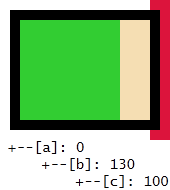
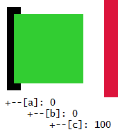
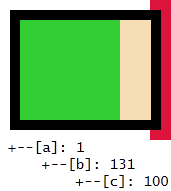

'margin-left' + 'border-left-width' + 'padding-left' + 'width' + 'padding-right' + 'border-right-width'
+ 'margin-right' = width of containing block (包含块的宽度)
上面的等式中必须使用各特性的使用值，以下为不同情况时该公式的计算规则：
关于 正常文档流中的块级非替换元素宽度算法 的更多内容，请参考 W3C CSS2.1 规范 10.3.3 Block-level, non-replaced elements in normal flow 中的描述。
在正常文档流中，当包含块宽度为 0，其内未设定明确宽度的块级元素由于设定了 'margin' 溢出包含块时，则该块级元素的宽度计算在 Chrome Safari 中会计算为 0。
此问题可能导致包含块内的块级元素的宽度过小，严重时会导致其内容丢失 (若设定了 'overflow:hidden')。
| 所有浏览器 |
|---|
根据问题描述编写如下测试样例：negative_margin.html
<!DOCTYPE html> <html> <head> <meta charset="utf-8" /> <script>
function $(id) { return document.getElementById(id); } window.onload = function () {
$("info").innerHTML = " +--[a]: " + $('a').clientWidth + "<br
/> +--[b]: " + $('b').clientWidth +
"<br/> +--[c]: " + $('c').clientWidth; } </script> </head> <body style="margin:0; font:14px/1.2 'Lucida Console';"> <div style="width:0; background:skyblue; margin-left:150px; border:10px solid crimson;" id="a"> <div style="background:wheat; margin-left:-150px; border:10px solid black; position:relative; zoom:1;" id="b"> <div style="width:100px; height:100px; background:limegreen;" id="c"></div> </div> </div> <div id="info"></div> </body> </html>
以上代码一个 width:0; 的 DIV 元素 [a] 中包含一个设定了 margin-left:-150px; 且没有明确设定宽度的 DIV 元素 [b]，则 [b] 会从左侧溢出 [a]，通过脚本得到 [a] 与 [b] 的计算后的宽度。
注: 代码中所有块级元素均没有设定 padding，则通过 clientWidth 属性获得的即元素的内容宽度。设定 position:relative; zoom:1; 的设置是为了避免 IE6 IE7 IE8(Q) 中负边距 (margin) 导致元素溢出 hasLayout 容器时显示异常，请参考：RB1001: IE6 IE7 IE8(Q) 负边距 (margin) 导致元素溢出 hasLayout 容器时显示异常。
运行结果截图如下：
| IE6 IE7 IE8 Opera Firefox | Chrome Safari |
|---|---|
|  |  |
各浏览器中 [b] 的计算后宽度出现了较大差异，先将 [b] 在等式中的各特性值列表如下：
'margin-left' + 'border-left-width' + 'padding-left' + 'width' + 'padding-right' + 'border-right-width'
+ 'margin-right' = width of containing block (包含块的宽度)
| [b] | 'margin-left' | 'border-left-width' | 'padding-left' | 'width' | 'padding-right' | 'border-right-width' | 'margin-right' | 包含块的宽度 |
|---|---|---|---|---|---|---|---|---|
| 设定值 | -150px | 10px |
无
[使用初始值 0] |
无
[使用初始值 auto] |
无
[使用初始值 0] |
10px |
无
[使用初始值 auto] |
0px |
| 计算值 | -150px | 10px | 0px |
auto
[根据等式计算此值] |
0px | 10px |
0px
[若 'width' 设定为 'auto'，则其它的 'auto' 值变为 '0'] |
0px |
将上述计算值填入宽度计算等式 (单位均为 px)：-150 + 10 + 0 + auto + 0 + 10 + 0 = 0。
则 auto = 130px。
根据 CSS2.1 规范中的宽度算法定义，[b] 的宽度应为 130px。
从测试样例的截图中可知，
将测试样例中 [a] 的 'width' 特性设定值改为 1px：<div style="width:1px; background:skyblue; margin-left:150px; ...
id="a">。
此时所有浏览器中运行效果均相同，且符合规范描述：

由此可见 Chrome Safari 中，对于在正常文档流中，当包含块宽度为 0，其内未明确设定宽度的块级元素由于 'margin' 特性溢出包含块时，对该块级元素的宽度计算并未遵循规范的算法描述，但当包含块宽度大于 0 时遵循规范中的描述。
尽量避免出现未明确设定宽度 (值为 'auto') 的块级元素由于设定了 'margin' 导致其溢出其宽度为 0 的包含块，应为其设定一个明确的宽度。
| 操作系统版本: | Windows 7 Ultimate build 7600 |
|---|---|
| 浏览器版本: |
IE6
IE7 IE8 Firefox 3.6.10 Chrome 7.0.544.0 dev Safari 5.0.2 Opera 10.62 |
| 测试页面: |
negative_margin.html
margin_ani.html |
| 本文更新时间: | 2010-10-27 |
width margin containing block 包含块 宽度